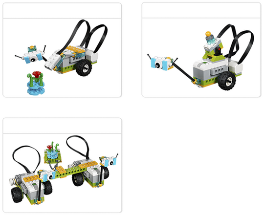

Overview of the Project
This project is about discovering ways in which scientists and engineers can use rovers in order to explore places where humans cannot go.
Type of Project
This Getting Started Project will enable you and your pupils to get in touch with some important elements of the WeDo 2.0 projects, including:
-
Engaging in a discussion
-
Building a LEGO model
-
Connecting the Smarthub to a device
-
Programming a LEGO model
-
Taking a picture with the Capture tool
-
Writing in the Documentation tool
Duration
Approx. 45 minutes
Next Steps
Have a look at parts B, C and D of the ‘Milo, the Science Rover’ project.
